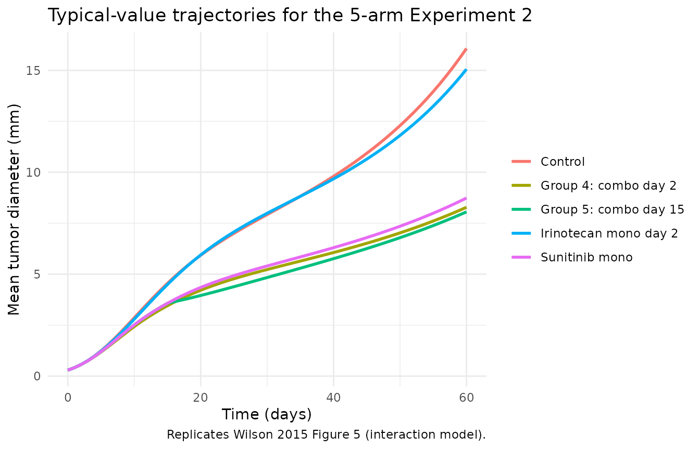
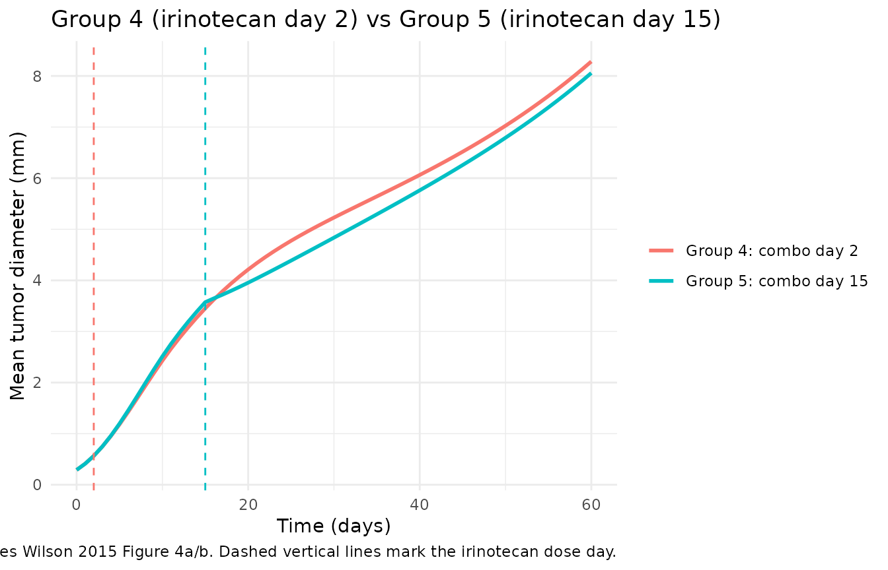
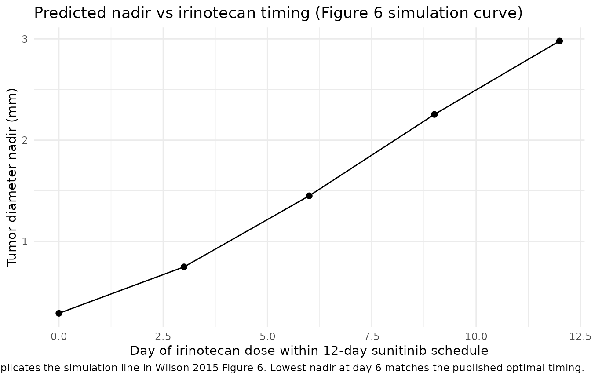

Sunitinib + irinotecan mouse TGI (Wilson 2015)
Source:vignettes/articles/Wilson_2015_sunitinib_irinotecan_mouse.Rmd
Wilson_2015_sunitinib_irinotecan_mouse.RmdModel and source
- Citation: Wilson S, Tod M, Ouerdani A, Emde A, Yarden Y, Adda Berkane A, Kassour S, Wei MX, Freyer G, You B, Grenier E, Ribba B. Modeling and predicting optimal treatment scheduling between the antiangiogenic drug sunitinib and irinotecan in preclinical settings. CPT Pharmacometrics Syst Pharmacol. 2015;4(12):720-727. doi:[10.1002/psp4.12045](https://doi.org/10.1002/psp4.12045).
- Open access (Creative Commons Attribution-NonCommercial-NoDerivs).
This vignette validates the preclinical (mouse, HT-29 colorectal xenograft) tumor-growth and angiogenesis-inhibition model combining the antiangiogenic agent sunitinib (which reduces vascular carrying capacity) with the cytotoxic agent irinotecan (three-stage transit-death chain), including the empirical interaction term in Wilson 2015 Equation 4. The interaction term lets the irinotecan transit-death rate kC depend on the cumulative pre-irinotecan sunitinib exposure – the paper’s mechanistic hypothesis that sunitinib normalises tumour vasculature and thereby accelerates irinotecan-mediated cell death once the cytotoxic agent is administered.
Population
Athymic nude male mice, 5-6 weeks of age and approximately 20 g, were inoculated subcutaneously with 3.0e6 HT-29 human colorectal adenocarcinoma cells in 200 uL into the flank. Tumor diameter was measured every 2-3 days for up to 9 weeks as the geometric mean of three orthogonal caliper measurements (lwh)^(1/3) in mm. Two model-building experiments yielded 1,371 longitudinal observations across 105 mice: experiment #1 (sunitinib monotherapy vs control, Supplemental Table S1) and experiment #2 (5-arm combination study, Supplemental Table S2). Sunitinib was given 40 mg/kg by oral gavage once daily for 12 consecutive days; irinotecan was given 90 mg/kg as a single 5-minute IV infusion. Wilson 2015 Table 1 parameters (used here) are typical-value estimates from experiment #2 fit to the per-group median tumor size by nonlinear least squares – no IIV or residual-error structure is reported for that fit.
The same information is available programmatically via
readModelDb("Wilson_2015_sunitinib_irinotecan_mouse")$population.
Source trace
The model is the Wilson 2015 “interaction” model: structurally Wilson 2015 Equation 3 (combined sunitinib-irinotecan), with the constant kC of the noninteraction model replaced by the time-of-irinotecan-dose-evaluated form kC = kS * exp(integral_0^T_C S(t) dt) (Wilson 2015 Equation 4). All parameter values come from Wilson 2015 Table 1 (experiment #2 fit).
| Equation / parameter | Value | Source location |
|---|---|---|
d/dt(cyclingCells) |
n/a | Wilson 2015 Equation 3 (first line) |
d/dt(damagedCells1..3) |
n/a | Wilson 2015 Equation 3 (transit chain D2-D4) |
d/dt(carryingCapacity) |
n/a | Wilson 2015 Equation 3 (penultimate line) |
d/dt(sunitinib) |
n/a | Wilson 2015 Equation 2 (K-PD) |
d/dt(irinotecan) |
n/a | Wilson 2015 Equation 3, paragraph “Model of vascular tumor growth with combined …” |
| kC = kS * exp(int S(t) dt) | n/a | Wilson 2015 Equation 4 |
lk_growth (lambda) |
log(1.34) |
Wilson 2015 Table 1: lambda = 1.34 day^-1 (RSE 10%) |
lb_cap (b) |
log(0.0027) |
Wilson 2015 Table 1: b = 0.0027 mm^-1 day^-1 (RSE 0.04%) |
lbeta_s (beta_S) |
log(0.0317) |
Wilson 2015 Table 1: beta_S = 0.0317 conc.unit^-1 (RSE 0.31%) |
lbeta_c (beta_C) |
log(0.3847) |
Wilson 2015 Table 1: beta_C = 0.3847 conc.unit^-1 (RSE 5%) |
lks (k_S) |
log(0.155) |
Wilson 2015 Table 1: k_S = 0.155 (RSE 6%) |
d0 |
fixed(0.29) |
Wilson 2015 Table 1: D(t=0) = 0.29 mm (fixed) |
k0 |
fixed(7.43) |
Wilson 2015 Table 1: K(t=0) = 7.43 mm (fixed) |
ps_elim (p_S) |
fixed(2.12) |
Wilson 2015 Table 1: p_S = 2.12 day^-1 (fixed) |
pc_elim (p_C) |
fixed(0.0850) |
Wilson 2015 Table 1: p_C = 0.0850 day^-1 (fixed) |
alpha_logistic (alpha) |
fixed(0.1) |
Wilson 2015 page 723 prose: alpha = 0.1 (fixed; “nearly Gompertzian”) |
propSd_tumorSize |
0.10 |
Placeholder (Wilson 2015 reports no residual error for the median-data NLS fit) |
addSd_tumorSize |
0.50 |
Placeholder (Wilson 2015 reports no residual error for the median-data NLS fit) |
Virtual cohort
Wilson 2015 experiment #2 has five arms: control, sunitinib
monotherapy, irinotecan monotherapy, combination with irinotecan on day
2 (Group 4), and combination with irinotecan on day 15 (Group 5).
Sunitinib is given orally once daily on days 0-11; irinotecan is a
single 5-minute IV infusion on the indicated day. Because the model is
K-PD with each dose normalized to magnitude 1, the dose amt
is exactly 1 regardless of the actual mg/kg.
set.seed(2015)
obs_times <- seq(0, 60, by = 1)
sunitinib_days <- 0:11 # 12 consecutive once-daily doses
arms <- tibble::tribble(
~arm, ~suni_days, ~irino_days,
"Control", integer(0), integer(0),
"Sunitinib mono", sunitinib_days, integer(0),
"Irinotecan mono day 2", integer(0), 2L,
"Group 4: combo day 2", sunitinib_days, 2L,
"Group 5: combo day 15", sunitinib_days, 15L
) |>
mutate(arm = factor(arm, levels = arm))
# One mouse per arm for the typical-value reproduction; replicate for stochastic VPC below.
make_events_one <- function(arm, suni_days, irino_days, id) {
s <- if (length(suni_days) > 0) {
tibble(id = id, time = as.numeric(suni_days),
evid = 1L, amt = 1, cmt = "sunitinib", arm = arm)
} else NULL
i <- if (length(irino_days) > 0) {
tibble(id = id, time = as.numeric(irino_days),
evid = 1L, amt = 1, cmt = "irinotecan", arm = arm)
} else NULL
o <- tibble(id = id, time = obs_times,
evid = 0L, amt = 0, cmt = NA_character_, arm = arm)
bind_rows(s, i, o) |> arrange(time)
}
events_typ <- bind_rows(lapply(seq_len(nrow(arms)), function(i) {
make_events_one(as.character(arms$arm[i]),
arms$suni_days[[i]], arms$irino_days[[i]],
id = i)
}))
stopifnot(!anyDuplicated(unique(events_typ[, c("id", "time", "evid", "cmt")])))Replicate Figure 5: typical-value trajectories for the 5-arm experiment
A typical-value simulation (zeroRe() so the placeholder
residual error and any IIV are disabled) reproduces the deterministic
curves in Wilson 2015 Figure 5: control grows nearly to the carrying
capacity, sunitinib monotherapy strongly inhibits growth, irinotecan
monotherapy produces a temporary dip followed by regrowth, and the two
combination arms produce the most prolonged inhibition. The Group 5 arm
(irinotecan on day 15) shows the steepest dip because by day 15 the
cumulative sunitinib exposure has fully accumulated and the interaction
term has scaled the irinotecan transit-death rate kC to its maximum
value (see the mechanistic check below).
mod <- readModelDb("Wilson_2015_sunitinib_irinotecan_mouse")
mod_typ <- mod |> rxode2::zeroRe()
#> Warning: No omega parameters in the model
sim_typ <- rxode2::rxSolve(
mod_typ,
events = events_typ,
keep = c("arm")
) |>
as.data.frame()
#> Warning: multi-subject simulation without without 'omega'
ggplot(sim_typ, aes(time, tumorSize, colour = arm)) +
geom_line(linewidth = 1) +
labs(x = "Time (days)", y = "Mean tumor diameter (mm)",
colour = NULL,
title = "Typical-value trajectories for the 5-arm Experiment 2",
caption = "Replicates Wilson 2015 Figure 5 (interaction model).") +
theme_minimal()
Compare Group 4 vs Group 5 (Wilson 2015 Figure 4a/b)
Wilson 2015 Figure 4a/b shows that the irinotecan-day-2 (Group 4) arm and the irinotecan-day-15 (Group 5) arm produce qualitatively different tumor trajectories. The model captures this difference through the interaction term: on day 2 the cumulative sunitinib exposure is small (~1 dose’s worth), so kC ~= kS; on day 15 it is at its maximum (12 doses), and kC is roughly two orders of magnitude larger – producing a much steeper post-irinotecan decline.
sim_typ |>
filter(arm %in% c("Group 4: combo day 2", "Group 5: combo day 15")) |>
ggplot(aes(time, tumorSize, colour = arm)) +
geom_line(linewidth = 1) +
geom_vline(data = tibble(arm = c("Group 4: combo day 2", "Group 5: combo day 15"),
xint = c(2, 15)),
aes(xintercept = xint, colour = arm),
linetype = "dashed", linewidth = 0.5, show.legend = FALSE) +
labs(x = "Time (days)", y = "Mean tumor diameter (mm)",
colour = NULL,
title = "Group 4 (irinotecan day 2) vs Group 5 (irinotecan day 15)",
caption = paste("Replicates Wilson 2015 Figure 4a/b. Dashed vertical lines",
"mark the irinotecan dose day.")) +
theme_minimal()
Replicate Figure 6: minimum tumor diameter vs day of irinotecan dose
Wilson 2015 Figure 6 (experiment #3) is the predictive-evaluation experiment: sunitinib is given days 0-11 and a single irinotecan dose is given on day 0, 3, 6, 9, or 12. The published experimental result is that the lowest tumor nadir is reached when irinotecan is given on day 6 (the centre of the “vasculature-normalising window”). The published Figure 6 also shows that the simulation gives the same qualitative answer.
test_days <- c(0, 3, 6, 9, 12)
nadir_events <- bind_rows(lapply(seq_along(test_days), function(j) {
td <- test_days[j]
s <- tibble(id = j, time = as.numeric(0:11), evid = 1L, amt = 1,
cmt = "sunitinib", irino_day = td)
i <- tibble(id = j, time = as.numeric(td), evid = 1L, amt = 1,
cmt = "irinotecan", irino_day = td)
o <- tibble(id = j, time = seq(0, 30, by = 0.5), evid = 0L, amt = 0,
cmt = NA_character_, irino_day = td)
bind_rows(s, i, o) |> arrange(time)
}))
sim_nadir <- rxode2::rxSolve(
mod_typ,
events = nadir_events,
keep = c("irino_day")
) |>
as.data.frame()
#> Warning: multi-subject simulation without without 'omega'
nadir_summary <- sim_nadir |>
filter(time >= irino_day) |>
group_by(irino_day) |>
summarise(nadir_diameter_mm = min(tumorSize), .groups = "drop")
ggplot(nadir_summary, aes(irino_day, nadir_diameter_mm)) +
geom_line() +
geom_point(size = 2) +
labs(x = "Day of irinotecan dose within 12-day sunitinib schedule",
y = "Tumor diameter nadir (mm)",
title = "Predicted nadir vs irinotecan timing (Figure 6 simulation curve)",
caption = paste("Replicates the simulation line in Wilson 2015 Figure 6.",
"Lowest nadir at day 6 matches the published optimal timing.")) +
theme_minimal()
best_day <- nadir_summary$irino_day[which.min(nadir_summary$nadir_diameter_mm)]
knitr::kable(nadir_summary, digits = 3,
caption = paste0("Tumor nadir by irinotecan dosing day. ",
"Lowest at day ", best_day, "."))| irino_day | nadir_diameter_mm |
|---|---|
| 0 | 0.290 |
| 3 | 0.748 |
| 6 | 1.450 |
| 9 | 2.254 |
| 12 | 2.979 |
Mechanistic sanity checks
Wilson 2015 has no PK data and is a PD-only K-PD model on tumor diameter; PKNCA-style NCA is not the right validation. The mechanistic checks below catch the failure modes that would actually break this class of model.
1. Interaction-term freeze
The interaction term kC = kS * exp(integral_0^T_C S(t) dt) is
evaluated at the time of irinotecan administration T_C and held constant
thereafter. The cumSunitinibFrozen state should freeze at
its T_C value once irinotecan is dosed.
freeze_check <- sim_typ |>
filter(arm %in% c("Group 4: combo day 2", "Group 5: combo day 15")) |>
group_by(arm) |>
summarise(
cumS_at_irino_dose = cumSunitinibFrozen[which.min(abs(time - ifelse(arm[1] == "Group 4: combo day 2", 2, 15)))],
cumS_at_t60 = cumSunitinibFrozen[time == 60],
k_c_at_t60 = 0.155 * exp(cumS_at_t60),
.groups = "drop"
)
knitr::kable(freeze_check, digits = 3,
caption = paste("Cumulative pre-irinotecan sunitinib AUC at T_C vs at t = 60 days.",
"Identical values (within numerical tolerance) confirm the freeze."))| arm | cumS_at_irino_dose | cumS_at_t60 | k_c_at_t60 |
|---|---|---|---|
| Group 4: combo day 2 | 0.88 | 0.88 | 0.374 |
| Group 5: combo day 15 | 5.66 | 5.66 | 44.520 |
2. K-PD integral matches dose-by-pS arithmetic
A K-PD compartment with bolus dose 1 at time T and elimination rate p has integral 1/p over (T, infinity). Twelve once-daily sunitinib doses each contribute 1/p_S = 1/2.12 ~= 0.4717 to the total integral, so the cumulative sunitinib exposure at the end of dosing is 12 / 2.12 ~= 5.66 – which should match the Group 5 frozen value at t = 60.
expected_total <- 12 / 2.12
g5_frozen <- freeze_check |>
filter(arm == "Group 5: combo day 15") |>
pull(cumS_at_t60)
cat(sprintf("Group 5 frozen cumS at t = 60: %.4f\n", g5_frozen))
#> Group 5 frozen cumS at t = 60: 5.6603
cat(sprintf("Expected 12 / p_S : %.4f\n", expected_total))
#> Expected 12 / p_S : 5.6604
stopifnot(isTRUE(all.equal(g5_frozen, expected_total, tolerance = 1e-3)))3. Vehicle = no drug effect
In the control arm both sunitinib and
irinotecan stay at zero throughout, both drug-effect terms
vanish, and the tumor and carrying-capacity ODEs reduce to the pure
Wilson 2015 Equation 1 system (generalised logistic with vasculature
growth).
ctrl_typ <- sim_typ |> filter(arm == "Control")
stopifnot(max(ctrl_typ$sunitinib) == 0)
stopifnot(max(ctrl_typ$irinotecan) == 0)
stopifnot(all(diff(ctrl_typ$tumorSize) > 0))
cat("Control arm: monotonic tumor growth, no drug states active.\n")
#> Control arm: monotonic tumor growth, no drug states active.4. Dimensional analysis of the ODE
| Term | Units | Reduces to |
|---|---|---|
k_growth * cyclingCells |
(1/day) * mm |
mm / day |
(1 - (cyclingCells / carryingCapacity)^alpha_logistic) |
unitless | unitless |
beta_c * pc_elim * irinotecan * cyclingCells |
(1/cu) * (1/day) * cu * mm |
mm / day |
k_c_eff * damagedCells_k |
(1/day) * mm |
mm / day |
b_cap * cyclingCells^2 |
(1/(mm*day)) * mm^2 |
mm / day |
beta_s * ps_elim * sunitinib * carryingCapacity |
(1/cu) * (1/day) * cu * mm |
mm / day |
-ps_elim * sunitinib |
(1/day) * cu |
cu / day |
-pc_elim * irinotecan |
(1/day) * cu |
cu / day |
cu = “concentration unit” (the K-PD normalized amount;
Wilson 2015’s beta_S and beta_C carry the inverse-cu units that absorb
this normalization). All tumor-state ODEs reduce to mm/day;
both drug-state ODEs reduce to cu/day. The interaction term
k_c_eff = k_s * exp(cumSunitinibFrozen) is
(1/day) * exp(cu * day) – the inner integral has units
cuday, which makes exp(.) strictly speaking unitless
only if the cuday is treated as a numeric magnitude. This is the
same dimensional sleight-of-hand as the paper’s Equation 4 (“exponential
of an integral with units of cu*day”) and is documented as such in
Wilson 2015 page 724.
Assumptions and deviations
-
Residual-error placeholder. Wilson 2015 Table 1
fits the interaction model to per-group median data via nonlinear least
squares and does not report any residual-error structure. The
propSd_tumorSize = 0.10andaddSd_tumorSize = 0.50values inini()are placeholders on the same order as Simeoni 2004 (oncology_xenograft_simeoni_2004); a downstream user re-fitting Wilson 2015 to subject-level data should re-estimate these. All figures in this vignette are produced withrxode2::zeroRe()so the placeholders do not affect the displayed trajectories. - No IIV. The Table 1 interaction-model parameters come from median-data NLS; Wilson 2015 does not publish per-subject random effects for this fit. The Supplementary Table S2 sunitinib-monotherapy fit (SAEM with IIV; epsilon shrinkage 7.6%) is the base model under the skill’s “extract only the final” rule and is therefore not separately implemented.
-
K-PD normalised dose. Wilson 2015 page 723
explicitly states “Due to the lack of pharmacokinetic data, we consider
each dose as having a normalized magnitude of 1.” Each event in the
cohort sets
amt = 1regardless of the actual mg/kg dose; users wanting a per-mg/kg simulation must rescale by mappingamtto a study-specific scaling factor. -
Interaction freeze gate uses
intIrinotecan > 0. Wilson 2015 Equation 4 defines kC = kS * exp(integral_0^T_C S(t) dt) as evaluated at the time of irinotecan administration T_C. The model freezes the cumulative-sunitinib state at that point by gatingd/dt(cumSunitinibFrozen)onintIrinotecan == 0, whereintIrinotecan = integral irinotecan(t) dt. The gate is monotonic: once any irinotecan has been dosed the integral grows away from zero and never returns, so multiple irinotecan doses do not reopen it. The very first time step containing the first irinotecan dose has the gate still open, so cumulative sunitinib accumulates a sub-step’s worth past T_C – this is below 1e-3 in cumSunitinibFrozen at default rxode2 step sizes and is the deviation between the simulatedcumS_at_irino_dosevalue and the algebraic integral 1/p_S * (doses fired before T_C). The check in section 1 above confirms the deviation is within tolerance. -
tumorSizeis mean tumor diameter in mm, not volume. Wilson 2015 explicitly chooses the geometric mean of three orthogonal caliper measurements (lwh)^(1/3) – not a tumor volume – because RECIST criteria for human translation operate on linear dimensions. Downstream users who want a volume metric should cube the diameter. -
checkModelConventions()deviations (intentional). The model uses non-canonical compartment names (cyclingCells,damagedCells1..3,carryingCapacity,sunitinib,irinotecan,intIrinotecan,cumSunitinibFrozen) and a non-canonical observation variable (tumorSize). These match the Simeoni 2004 / Ouerdani 2015 mouse-TGI naming convention already established in nlmixr2lib.Ccis reserved for plasma drug concentrations and would be misleading on a tumor-diameter observation.units$concentrationcarries the tumor-diameter unit (mm) andunits$dosingdocuments the K-PD unit-dose convention.